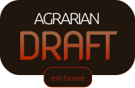
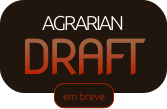

Conheça nosso novo produto.
Agrarian
O Agrarian é um SaaS (Software as a Service) composto de subprodutos, então o proprietário tem a opção de escolher determinados serviços ou o todo. Entre os produtos: Agrarian Water, Agrarian Plant, Agrarian Crop e Agrarian Draft. Até o momento a Blaise só oferece o Agrarian Water, os demais têm previsão de lançamento até o fim do ano.
 

Water
Tem como proposta automatizar as irrigações com o menor custo possível, ou seja, além de promover o solo ideal à plantação, reduzir o consumo de água.
Através do IoT, o sistema inteligente de irrigação hidrata o plantio só quando necessário, partindo de cálculos que levam em consideração o clima, a umidade do ar e do solo, temperatura, índice pluviométrico etc.
Como funciona?
Todas suas funcionalidades são possíveis graças aos sensores implantados por toda a lavoura, controladores que farão a lógica da informação, e atuadores elétricos - não poluentes - para a liberação das bombas d’água. Toda a implementação é feita a partir de uma rede sem fio e pode ser controlada remotamente através de um computador, celular ou smartwatch.